Light carries the signal.
Tiny changes in the neon’s light encode audio and timing, too fast for the eye to see. The coral glow is the visible carrier.
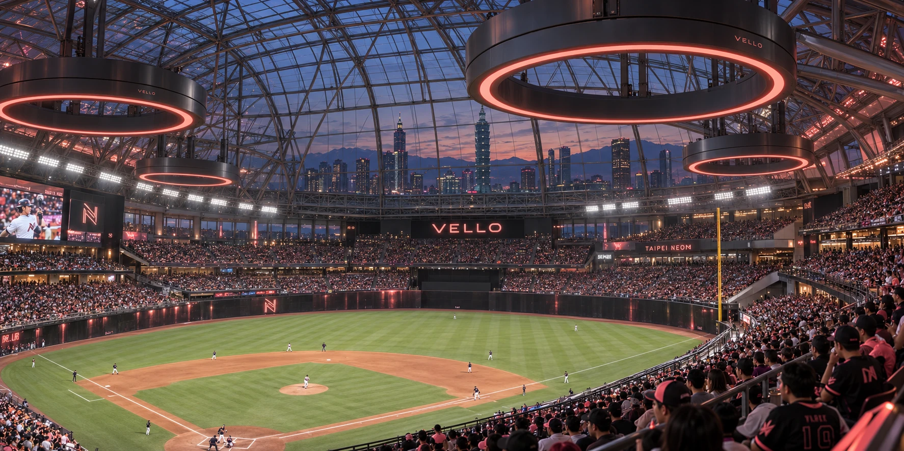
VELLO Stadium · Taipei, Taiwan
The Neon carry the illuminated lettering of the city into the ballpark. Coral lines trace an ivory jersey; an embroidered N sits on a black cap. Above the stands, VELLO’s rings put the same shape and color to work at stadium scale.
The roster brings players from across the league’s world to Taipei. The club’s home is specific; its players come from far beyond it.
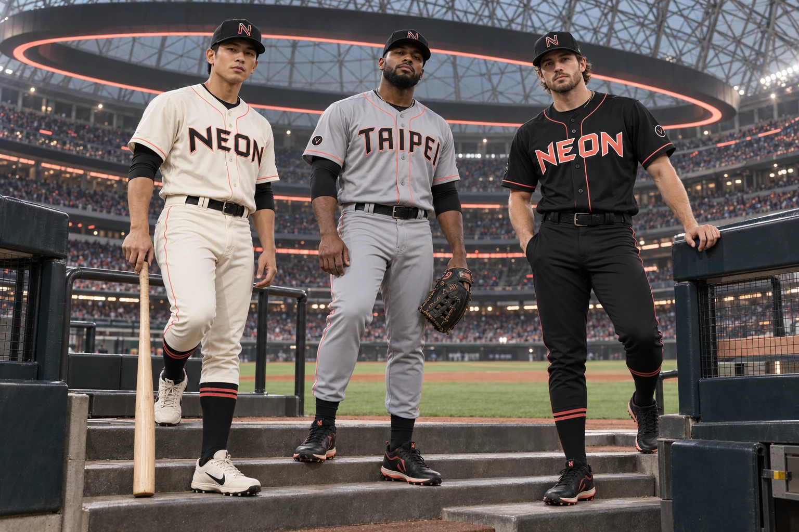
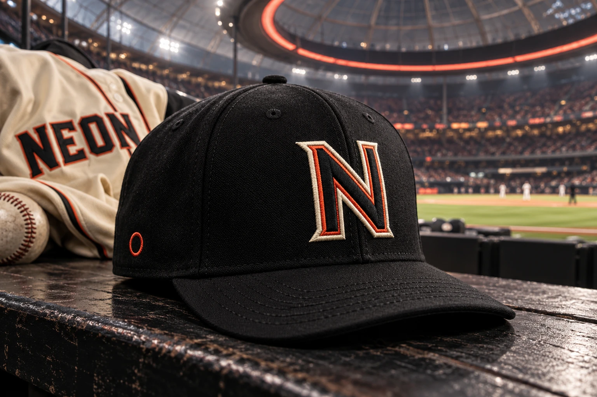
Black fabric, a dark letter, an ivory border, and a narrow coral line. A small embroidered ring sits at the side.
The home and alternate jerseys carry NEON across the chest. TAIPEI travels on the gray road jersey. Coral piping connects all three.
All 15 players in Taipei’s 2026 collection, with printed fronts and backs. Select a card to turn it over, or expand its details to read the biography and season line.
Kaito Ueda (TPE-01) and Adebayo Olumide (TPE-02) open the player claims. Other cards are opening soon. A request enters editorial review; a private 16-digit FIELDSTOCK code is issued by email after approval.
Loading the card collection…
| Player | Pos | B/T | Age | Birthplace | Card |
|---|---|---|---|---|---|
| Kaito Ueda | CF | R/R | 25 | Yokohama, Japan | TPE-01 |
| Adebayo Olumide | 3B | R/R | 28 | Ibadan, Nigeria | TPE-02 |
| Han-wei Tseng | 2B | S/R | 23 | Taichung, Taiwan | TPE-03 |
| Martín Echevarría | 1B | L/R | 31 | Ponce, Puerto Rico | TPE-04 |
| Dariusz Wierzbik | SS | R/R | 26 | Gdańsk, Poland | TPE-05 |
| Owen Rasmusson | C | R/R | 29 | Duluth, Minnesota, USA | TPE-06 |
| Eric Lawson | LF | L/L | 31 | Eugene, Oregon, USA | TPE-07 |
| Jose Ramirez | RF | R/R | 34 | Santiago, Dominican Republic | TPE-08 |
| David Morales | DH | R/R | 35 | Miami, Florida, USA | TPE-09 |
| Hiroto Kuzumi | SP | R/R | 27 | Kobe, Japan | TPE-10 |
| Joaquín Iturriaga | SP | R/R | 29 | Valparaíso, Chile | TPE-11 |
| Eitan Ben-Sasson | SP | L/L | 26 | Haifa, Israel | TPE-12 |
| Tsai Ming Hao | SP | R/R | 33 | Tainan, Taiwan | TPE-13 |
| Idris El-Amin | RP | L/L | 31 | Khartoum, Sudan | TPE-14 |
| Miguel Santos | RP | L/L | 35 | Lisbon, Portugal | TPE-15 |
Player names open the official player files. Card numbers jump to the matching front and back in the collection.
A smoked translucent roof rests on an exposed steel lattice. Daylight reaches the bowl through the glass; after dark, the ring lights reflect across its underside. Taipei remains visible beyond the perimeter glazing.
Polished obsidian slabs catch color along the outfield. A matte center-field batter’s eye keeps the pitcher’s backdrop dark. White light covers the playing field; coral belongs to the stands and roof.
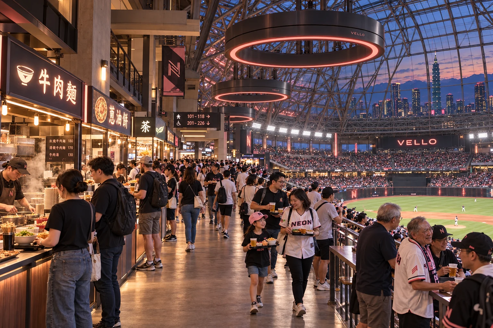
Steam rises behind the counters. Beef noodles, scallion pancakes, and cold tea travel back toward the seats. At the rail, fans balance a tray and keep an eye on the next pitch.
The concourse follows the seating bowl beneath the glass. Open sightlines let a conversation continue without losing the game; the city appears beyond the roof’s steel lattice.
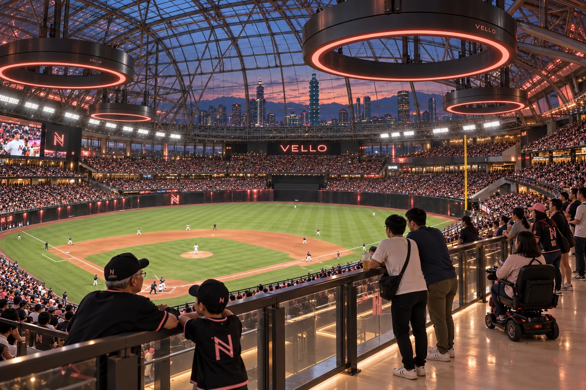
Immersive sound, carried by light.
A thick charcoal ring. An open center. A continuous neon tube recessed along its inner edge. One physical dial.
The neon carries the audio signal and the timing that connects each ring. Optical receivers read the light; concealed speaker arrays turn that signal into sound.
Working together, the rings place sound above, beside, and around the listener. At home, the ring stands in a cradle. At VELLO Stadium, enormous rings suspend that listening space beneath the dome.
Tiny changes in the neon’s light encode audio and timing, too fast for the eye to see. The coral glow is the visible carrier.
Optical receivers keep the rings in step. Concealed speaker arrays produce the sound you hear.
Coordinated output gives a sound its position and movement: above, beside, approaching, receding. You stand inside the arrangement.
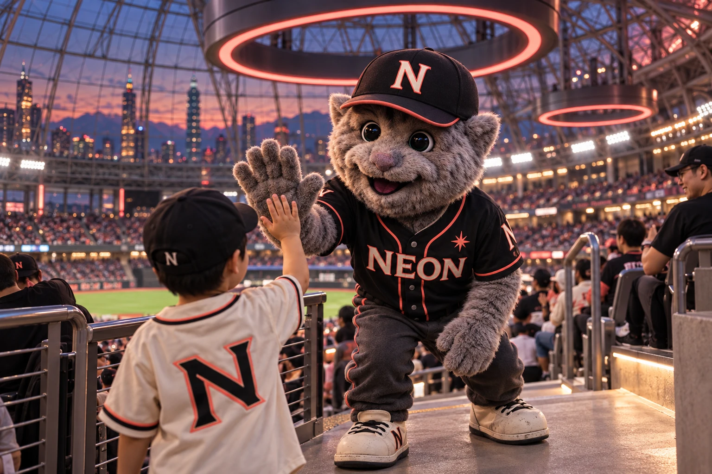
A gray cat, reflective trim, and sneakers with a whole season on them. Glow moves through the aisles instead of waiting beside the dugout, stopping for high-fives, photographs, and the occasional stolen seat.
On the final lap after a home win, Glow walks against the flow of the crowd. Everyone gets one more high-five on the way out.
Glow’s contribution entry is open. Propose a specific detail, habit, or story for editorial review. Approved contributions become part of the club record; claim details are issued privately after approval.
Contribute to Glow →Artifact GLB-TPE-MASCOT-0001 · Mascot contribution
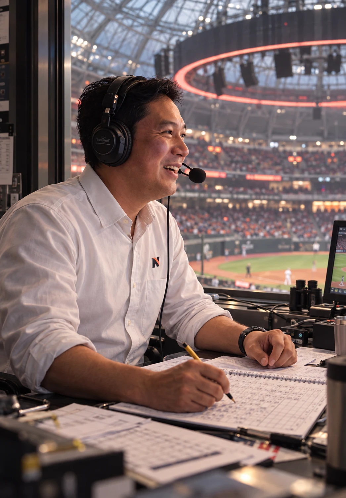
Chen keeps a pencil scorebook beside the monitor and leaves room for the park between pitches. On contact, the call follows the ball; the crowd supplies the rest.
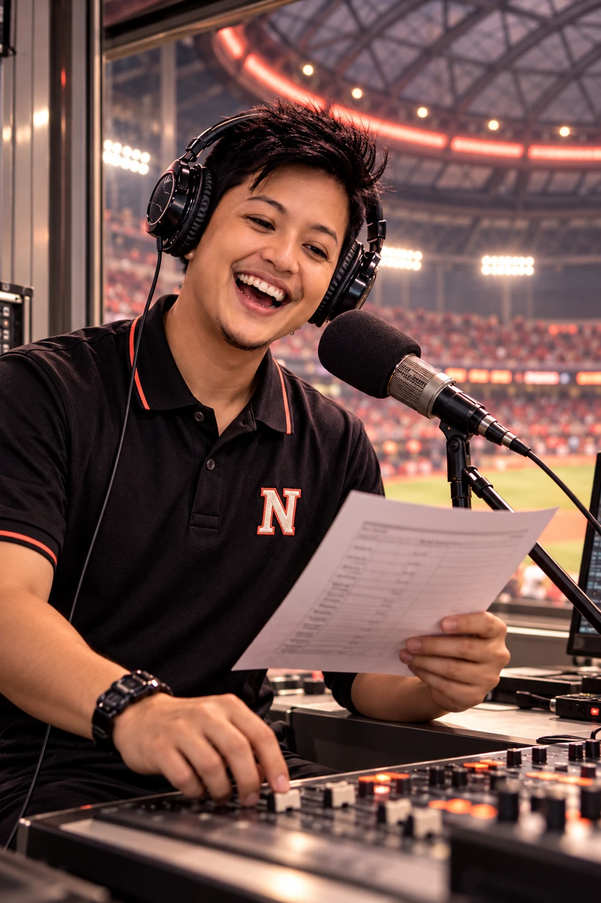
Huang handles lineups, player introductions, and the cues that travel around the bowl. The First Circuit starts here: three notes, one clap from each section, then the first name on the lineup.
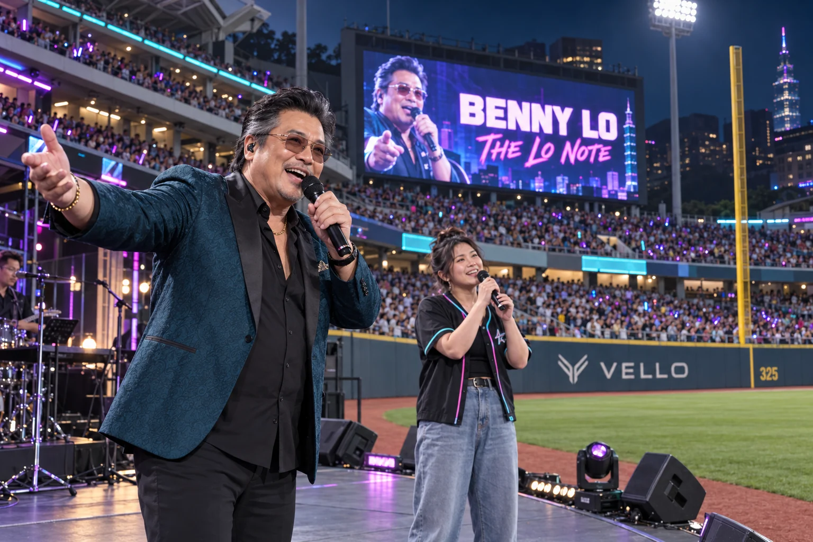
Benny Lo can hold a room with a low note and bring it to its feet with the next chorus. His set moves from brass-heavy soul to sweeping Mandarin ballads, backed by a live band that knows when to lean in and when to leave him the floor.
Sharp tailoring, an open collar, and photochromic glasses are his signatures. So is the pause before the final chorus, when he turns the microphone toward the seats and lets the crowd take over.
On residency nights, Benny takes a field-level stage beside the warning track after the final out. The diamond stays in view, the band settles in, and VELLO carries his voice around the bowl.
His full set leads into The Lo Note, the Neon’s recurring karaoke contest. A fan gets the microphone, Benny joins the chorus, and the ballpark becomes the backing choir.
Selected home dates · Postgame · Live band
Start on the concourse. Sing for the stands. Earn a duet with Benny.
Before the game on residency dates, short concourse auditions select three finalists. Each chooses a Mandarin or English song from the night’s karaoke list.
After Benny’s set, each finalist sings a verse and a chorus on the field-level stage. Benny hosts, a stage monitor carries the lyrics, and the crowd chooses the night’s winner by applause. The winner stays for an encore with Benny.
Winners return for the season’s final Lo Note. One singer earns the closing duet with Benny; when he turns the microphone toward the stands, everyone joins the last chorus.
A Taipei Neon club tradition · Residency dates and song lists announced with each event.
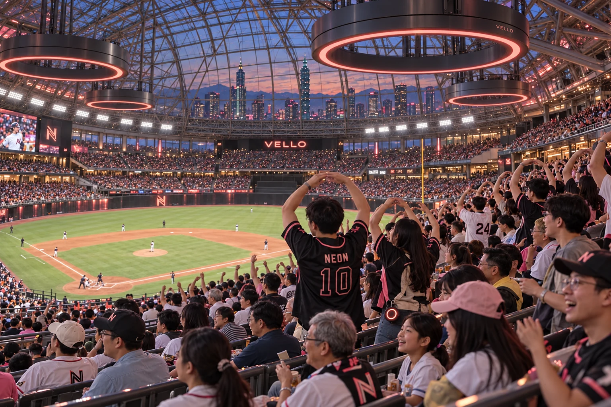
A three-note VELLO phrase passes around the seating bowl. Each section answers with one clap as it arrives. The circuit closes before the opening pitch.
Fans stand in sequence around the upper deck, raising both arms into an O. The lower bowl answers on the second pass. Glow is usually a section late.
The rings settle to steady coral. Fans take one more lap of the open concourse, past the food stalls and the city beyond the glass. Glow makes the same lap in reverse.
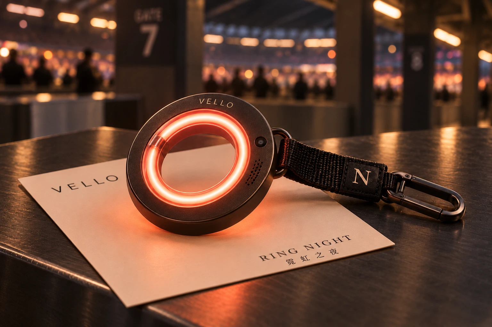
A palm-sized charcoal ring with a coral neon core. Clip it to a bag or wear it on its strap. Issued at the gate on Ring Night, it becomes part of the park’s opening cue.
Its optical receiver picks up the same light-carried signal that connects the stadium rings. When the First Circuit reaches your section, your ring lights and plays its note.
One circuit around the bowl. Thousands of small rings answering back. Take yours home after the final out.
Selected home dates · While supplies last
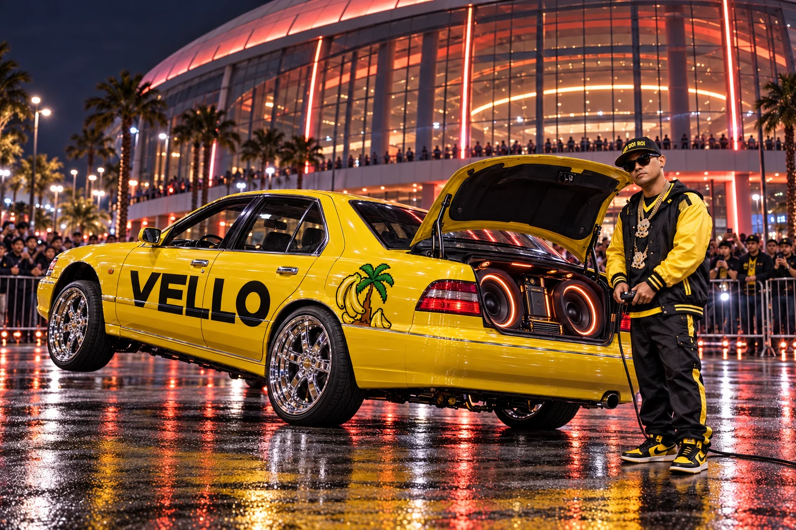
A 1996 Nissan Cefiro A32, built in Taiwan by Yulon, gives Roi’s exhibition car a connection to home. The four-door silhouette remains; banana-yellow paint, oversized chrome wheels, and custom hydraulics transform its stance. VELLO spans the doors, with pixel palms at the rear quarter.
Open the trunk and the sponsor becomes part of the machinery: two charcoal VELLO audio rings, coral-lit inner rims, and a fitted amplifier bay. The car carries its own listening space onto the stadium forecourt.
A controlled lift, a held angle, and three points planted. The Tripod Lean is Roi’s signature. Taipei’s DONK record includes Best Style at the league championship.
DONK championship archive →There is more to build around the Neon: club stories, characters, traditions, and artifacts. Contributions go through editorial review before joining GLB canon.
Contribute →Two player cards are open for claim in the collection above. Glow’s mascot contribution entry is also open. The remaining player cards are opening soon.